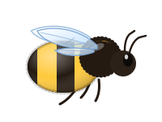
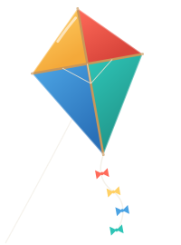

BETA
Seriously fun daily trivia
7 questions · 40 seconds each · Harder the more you rise
Question 1 of 7
Question question question question question question question question question question?
Answer:
Example:
Next game in 00:00:00